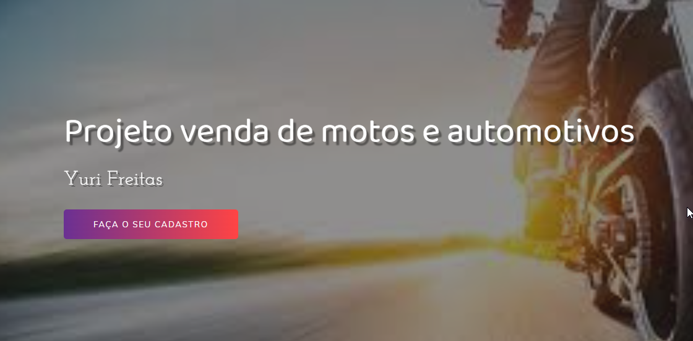
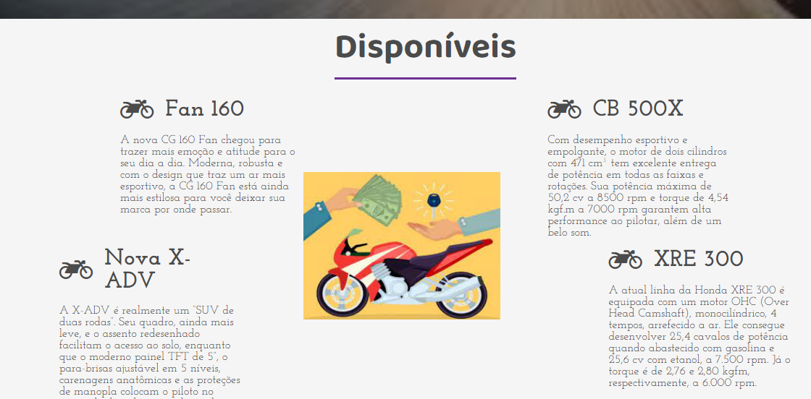
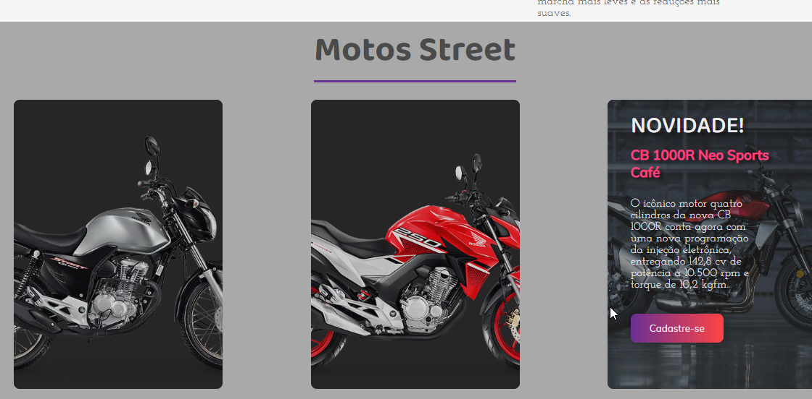
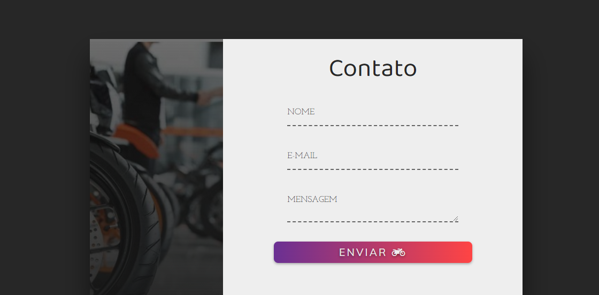
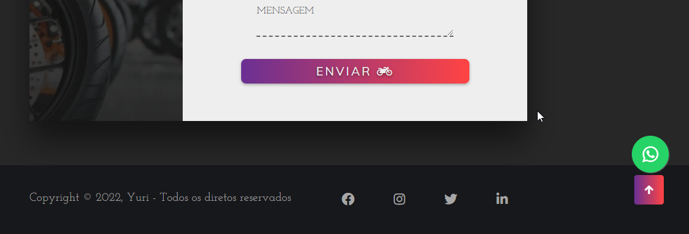
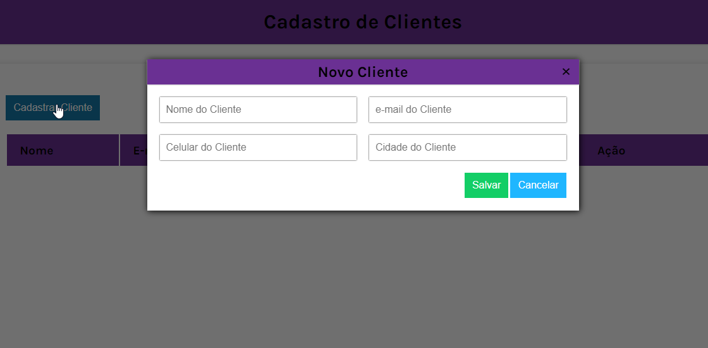

Motos & Automotivos
HEADER DO PROJETO - Criação de um site simples com CRUD
Trabalho acadêmico onde foi utilizado bastante css, animação com keyframes, API para o whatsapp e CRUD. (Site não está responsivo)

Parte descritiva das motocicletas.

Novidades da atualidades
Motos da atualidades(do ano), onde é preciso efetuar o cadastro para dar continuidade.

Formulário para contato
Formulário para contato com alerta utilizando Javascript.

NAV
Por fim, a NAV do projeto com minhas redes sociais.
Vemos também, um botão para voltar ao topo juntamente com a API para o whatsapp fixado na página.

CRUD
CRUD simples utilizando Javascript, ao clicar a qualquer botão de cadastro, ele gera o CRUD em outra aba. Nenhum vínculo a banco de dados.
← Voltar ao Portfólio
⠀